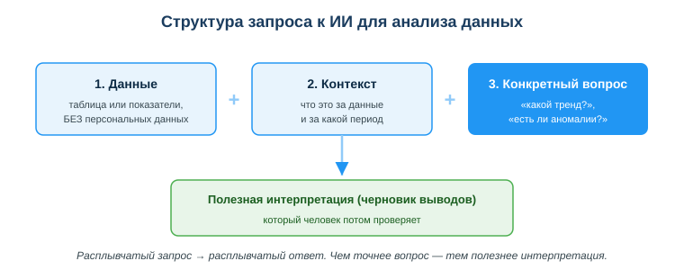
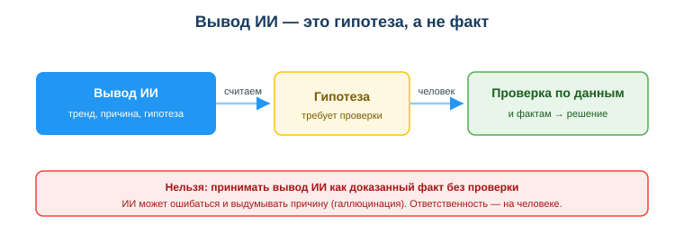

Использовать ИИ для анализа и интерпретации данных
Практическая ситуация
Тебе дали таблицу: помесячные продажи за полгода. Среднее посчитано, график построен — но руководитель спрашивает не «сколько», а «что это значит и что делать». Где провал? Почему? Что проверить дальше? Вручную разбираться долго, и ты решаешь спросить ИИ.
ИИ за минуту описывает тренд, замечает провал в марте и предлагает пару причин. Звучит убедительно. Но вот вопрос: можно ли сразу нести этот ответ руководителю — или сначала что-то проверить? И что вообще нельзя было класть в запрос?

Что ты научишься делать
- использовать ИИ, чтобы объяснить данные и найти закономерности;
- формулировать запрос к ИИ для анализа: данные + контекст + конкретный вопрос;
- проверять выводы ИИ по фактам, а не принимать их на веру;
- обезличивать данные перед отправкой в ИИ.
Почему это важно
Посчитать среднее и построить график — это полдела. Ценность работы с данными — в выводах: что данные означают и какое решение из них следует. ИИ резко ускоряет этот этап: он быстро объясняет показатели, замечает тренды и аномалии, подсказывает гипотезы. Вместо часов ручного разбора ты получаешь черновик интерпретации за минуты.
Связь с профессией: разработчик постоянно смотрит на данные — логи, метрики, результаты тестов, поведение пользователей. Умение быстро вытащить из них смысл с помощью ИИ и при этом не доверять слепо — рабочий навык. А обезличивание данных перед отправкой во внешний сервис — это ещё и требование закона, нарушение которого дорого обходится компании.
Учимся читать схему
Посмотри на схему структуры запроса выше. Ответь на вопросы:
- из каких трёх частей состоит хороший запрос для анализа?
- какое ограничение стоит на блоке «Данные» и почему?
- почему результат на схеме назван «черновиком», который человек потом проверяет?
Главное понятие
Интерпретация данных — это объяснение того, что означают цифры и какой вывод из них следует. ИИ помогает составить такую интерпретацию быстро, но любой его вывод остаётся гипотезой, пока человек не проверит её по фактам.
Проще: ИИ предполагает, человек проверяет и решает. ИИ не знает реальных внешних причин — он опирается только на то, что ты ему дал, и может додумать недостающее.
Что ИИ умеет с данными
- объяснить показатели — что значит «среднее выросло, а медиана упала»;
- найти закономерности — описать тренд, сезонность, выброс;
- предложить гипотезы — почему продажи упали в марте;
- подсказать следующий шаг — какой ещё срез данных посмотреть.
Как правильно спросить ИИ
Качество ответа зависит от запроса. Хороший запрос для анализа содержит три части:
- данные или их описание (таблица, показатели) — без персональных данных;
- контекст — что это за данные и за какой период;
- конкретный вопрос — «какой тренд?», «есть ли аномалии?», «какие 3 вывода?».
Расплывчатое «проанализируй это» даёт расплывчатый ответ. Чем точнее вопрос — тем полезнее интерпретация.
Вывод ИИ — это гипотеза
Самое важное правило урока: ответ ИИ — не приговор, а предположение. ИИ может ошибиться в расчёте, неверно понять контекст или выдумать правдоподобную, но ложную причину — это называют галлюцинацией. Поэтому любой вывод проходит через проверку человеком.

Схема показывает путь: вывод ИИ → считаем его гипотезой → человек проверяет по данным и фактам → принимает решение. Ответственность за итог всегда остаётся на человеке, а не на ИИ.
Мини-кейс
Есть продажи за 6 месяцев с провалом в марте. Запрос: «Вот помесячные продажи (числа). Опиши тренд и предположи 2 причины провала в марте». ИИ даёт тренд и гипотезы: сезонный спад и акция у конкурента. Звучит логично, но ИИ этого знать не может — он догадался. Дальше человек проверяет: смотрит календарь акций, спрашивает отдел продаж, сверяет с прошлым годом. Только подтверждённая причина идёт в отчёт.
Разбор типичной ошибки
Ошибка. Принять вывод ИИ как факт и сразу загрузить в ИИ реальные данные клиентов (имена, телефоны), чтобы «было нагляднее».
Почему это ошибка. Во-первых, ИИ может ошибиться или выдумать причину (галлюцинация) — непроверенный вывод приведёт к неверному решению. Во-вторых, загрузка реальных персональных данных во внешний сервис нарушает закон РК «О персональных данных и их защите» и создаёт риск утечки.
Как правильно. Считать вывод ИИ гипотезой и проверять её по данным и фактам. Перед отправкой — обезличивать данные: убирать имена, ID, контакты, оставляя только показатели.
Практика
Ответь письменно:
- Составь хороший запрос к ИИ для анализа таблицы посещаемости занятий за месяц (данные + контекст + конкретный вопрос). Покажи, что в нём нет персональных данных.
- ИИ написал: «Продажи упали в марте из-за плохой погоды». Опиши, как ты проверишь эту гипотезу, прежде чем внести её в отчёт.
Образец (часть ответа на пункт 1): «Вот посещаемость группы за март по дням недели (числа, без фамилий): пн — 18, вт — 20, … Это учебная группа из 22 человек, период — март. Вопрос: в какие дни посещаемость ниже и есть ли закономерность по дням недели?»
Самопроверка
- Я умею собрать запрос для анализа из трёх частей: данные + контекст + конкретный вопрос.
- Я отношусь к выводу ИИ как к гипотезе и знаю, что проверяю его по данным и фактам.
- Я обезличиваю данные перед отправкой в ИИ и понимаю, почему это требование закона.
Подумай
- Где в твоей учёбе или будущей работе ты мог бы дать ИИ данные на анализ? Какие данные пришлось бы обезличить заранее?
- Почему ответственность за решение по данным остаётся на человеке, даже если интерпретацию составил ИИ?
Итог
Что теперь делать:
- используй ИИ, чтобы быстро объяснить показатели и найти закономерности;
- давай ИИ контекст и конкретный вопрос — получишь полезный ответ;
- любой вывод ИИ считай гипотезой и проверяй по данным и фактам;
- никогда не загружай реальные персональные данные — обезличивай.
Полезные ссылки
Источник: материалы по применению ИИ и анализу данных (DigComp 2.2; UNESCO AI Competency Framework, 2024); Закон РК «О персональных данных и их защите».
Разработал: преподаватель ИКТ, магистр управления и информационной безопасности Калиаскаров Д.А.
Материал разработан рабочей группой ТОО «Колледж Хекслет Казахстан» и одобрен к использованию в обучении решением Педагогического совета.